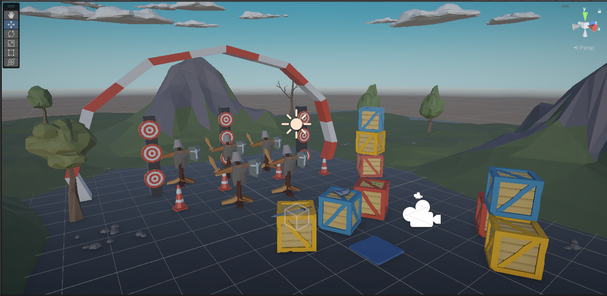

Projects
#
This project originated from a software engineering class, where we developed an 'SOS' game. At the start of the game, players choose their opponent: another player or the CPU, with an option for CPU vs. CPU if the user wants to spectate. The objective is to score more points than the opponent. When the game concludes, the score is displayed, and the user can choose to start a new game or exit.
I took a VR class where I created a virtual training ground to practice navigating the virtual world. In this game, you spawn in front of a selection of objects, including a sword, shield, and pistol. The objective is to knock down all the dummies using the selected objects. Once you complete the objective, you can restart the game and try again. The purpose of this game is to improve your accuracy in a virtual environment.